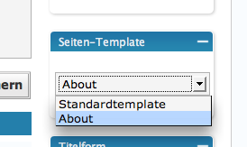

Dynamische “Über Uns”-Seite mit “Get Author Profile” im WordPress Blog anlegen
Wenn man einen kollaborativen Blog mit mehreren Autoren betreibt, ist eine "Über Uns"-Seite immer nett. So weiß der Leser, mit wem er es zu tun hat. Solch eine Seite kann man entweder statisch anlegen, oder - was die Sache etwas komfortabler macht - dynamisch, wobei die Informationen direkt aus den Profilen der Autoren kommen.
Dies ist jedoch nicht so ohne weiteres möglich. Zwar bietet WordPress bestimmte Template Tags um Autoreninformationen anzuzeigen, doch funktionieren die nur innerhalb des Loop, und zeigen die Informationen des Autors, der den Betrag geschrieben hat. Man kann also innerhalb des Loop mit den gegebenen Tags nicht Informationen aus mehreren Autorenprofilen abrufen.
An dieser Stelle kommt das PlugIn "Get Author Profile" ins Spiel. Dies bietet die Möglichkeit unter Angabe der der entsprechenden Autoren-ID alle Informationen unabhängig vom Loop abzurufen. Im Folgenden möchte ich kurz erläutern, wie man sich eine "Über Uns"-Seite im Stile von Phase 5 baut:
Ein Seiten-Template erstellen
Als erstes brauchen wir ein spezielles Template für die "Über Uns"-Seite. Dafür nehmen wir die page.php, kopieren sie und benennen sie in ueber_uns.php um. Danach öffnen wir sie und fügen ganz oben folgende Angabe ein:
<?php
/*
Template Name: Über Uns
*/
?>
Damit geben wir WordPress zu verstehen, dass es sich hierbei um ein alternatives Seiten-Template handelt, und teilen auch gleich den Namen mit - Über Uns.
Die Autoren-Tags einfügen
Als nächstes fügen wir unterhalb des <?php the_content(); ?>-Tags in der Datei ueber_uns.php die Autoren-Tags ein. Eine vollständige Liste dieser Tags gibt es auf der PlugIn-Homepage, weshalb ich nicht näher darauf eingehen werde. Für das Phase 5-Beispiel benötigen wir nur den Nickname und die Beschreibung:
<?php get_author_profile(2); ?>
<h5><?php author_profile('nickname'); ?></h5>
<p><?php author_profile('profile'); ?></p>
Das erste Tag gibt an, um welchen Autor es geht. Dafür gibt man einfach die Autoren-ID ein, die man der Benutzerliste im Backend entnehmen kann. Die beiden Tags darunter zeigen den Nickname und die Beschreibung an. Für jeden Autor, der am Blog arbeitet und aufgelistet werden soll, gibt man dieses Tag-Trio ein - direkt untereinander, der Ordnung halber durch eine Leerzeile getrennt.
Die "Über Uns"-Seite anlegen
Nun gehen wir ins Backend und legen eine neue Seite an, die wir "Über Uns" nennen. In das Textfeld für den Seiteninhalt schreiben wir eine kurze Einleitung, z.B. "Vorstellung der Autoren", oder was auch immer. Der Rest kommt direkt aus den Profilen der Autoren.

Allerdings müssen wir noch das "Über Uns"-Template einfügen. Dafür stellen wir auf der Bearbeitungsseite im Backend in der rechten Sidebar das Auswahlfeld "Seiten-Template" von Standardtemplate auf unser Über Uns-Template. Im Bild heißt es "About", was damit zusammenhängt, dass ich es in der ueber_uns.php so genannt habe.
Jetzt nur noch veröffentlichen, und fertig ist die dynamische "Über Uns"-Seite.
Nachteile dieser Methode
Zwei Nachteile hat das ganze aber dann doch:
- Die Autoren müssen die entsprechenden Felder, die angezeigt werden sollen, in ihrem Profil ausfüllen. Besonders bei der Beschreibung kann das etwas länger dauern.
- Es können im Profil keine Bilder angegeben werden. Wenn man also wie auf Phase 5 Fotos der Autoren anzeigen will, muss man diese direkt in der ueber_uns.php einfügen. Dynamisch ist das nicht unbedingt.


2 Kommentare zu "Dynamische “Über Uns”-Seite mit “Get Author Profile” im WordPress Blog anlegen"
- Externe Links im selben Fenster öffnen
- Externe Links in neuem Fenster öffnen
Paul
Danke für den Tipp, ist es auch möglich dies ohne sidebar anzuzeigen ? Also der Platz der Sidebar soll dann auch mit für den Content genutzt werden können.
Herschel Rubinstein
du lässt im template einfach das <?php get_sidebar(); ?> weg, und verbreiterst den inhaltsbereich per css auf die gesamte breite.